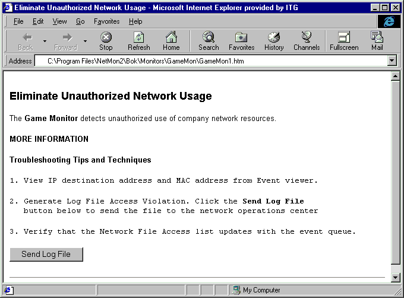

The final step of creating an event reference page (ERP) is to test it. You can test an ERP by viewing the file in an HTML browser such as Microsoft Internet Explorer. Or, you can install the ERP and its expert DLL to test it for event invocation and display it in the Network Monitor Event Viewer.
To view the completed ERP without an installed expert DLL, open the file with an HTML viewer that supports your embedded sources. The following illustration shows the sample ERP file described in Writing an ERP as it is displayed using Microsoft Internet Explorer Version 4.01.

Testing ERPs that Have a DLL
After the ERP files and the expert DLL is created, you can test the complete functionality of your ERPs with Network Monitor. It is assumed that the DLL is debugged and can generate valid events.
To test ERPs that have a DLL
For more information about creating an ERP, see:
Â
Â